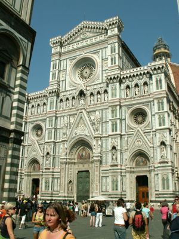
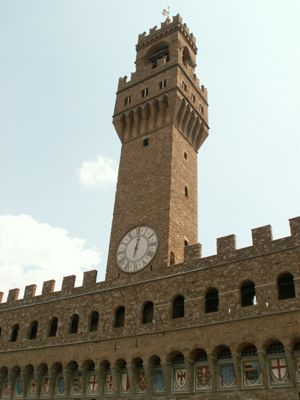

 Firenze központi épületét, a dómot 1296-ban kezdték építeni. A munka közel száz évig tartott, de a kupolára 1420-ig kellett várni. A hatalmas szerkezet megalkotását Brunelleschinek köszönhetjük. Az építész zseniális technikával, rögzített mintaív nélkül készítette el az óriási, levegős szerkezetet, melynek halszálkához hasonló mintájú boltcikkelyeit láncok erősítik egymáshoz. A kettős kupola átmérője 45 m, magassága 91 m. Az aranyozott gömb 1461-ben került fel a csúcsra. Brunelleschi megbecsülését jelzi, hogy a világi személyek közül egyedül ő kapott síremléket az altemplom kriptájában.
A katedrális homlokzata az elmúlt évszázadok során többször átalakult. 1887-ben nyerte el mai formáját. Díszítéséhez ugyanolyan carrarai fehér, pratói zöld és maremmai rózsaszín márványlapokat használtak fel, mint az épület többi részéhez.
A dóm mellett emelkedik Giotto harangtornya, amely 1359-ben készült el. a 84 m magas torony alsó szintjén hatszögletű, illetve rombusz alakú márványkazetták sorakoznak. A dóm szomszédságában épült fel a keresztelőkápolna is, melynek északi kapuján Ghiberti világhírű domborműveit láthatjuk.
 A hatalmas, szögletes palota építése 1294-ben kezdődött el. Jellegzetessége a 94 m magas torony, amely a mellvédes folyosóból nő ki. A torony alján elhelyezett óra 1667-ből származik. A durván faragott terméskőből készült falak méltóságot kölcsönöznek a háromszintes épületnek. A bejárat előtt megcsodálhatjuk Michelangelo Dávid szobrának másolatát. A palota bal sarkánál áll a Neptun-szökőkút.
A palota udvarából tágas lépcsőkön jutunk fel az Ötszázak termébe, amely a népi közgyűlés céljaira épült. A mennyezetet és a falakat allegórikus festmények díszítik, a falak mentén szoborcsoportokat láthatunk. Kiemelkedik közülük Michelangelo alkotása, amelyen a szellem legyőzi a nyers erőt. A műemlék helységek közül említést érdemel I. Francesco dolgozószobája, a Fogadási terem és a Liliomos terem, amely a kék mezőben elszórt arany liliomokról kapta a nevét. Itt helyezték el Donatello legremekebb szobrát, amely a bibliai Juditot ábrázolja, amint levágja Holofernesz fejét.
A palota előtti tér, a Piazza della Signoria Olaszország egyik legszebb építészeti remeke. A Palazzo Vecchio mellett nyílnak a későgót Loggia dei Lanzi árkádjai, melyek között kiemelkedő szobrászati remekművek másolatait csodálhatjuk meg, köztük Cellini világhírű Perszeuszát. A téren emelkedik I. Cosimo lovasszobra.